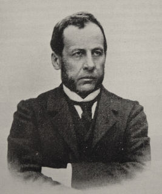

|  |
Parinaud's syndrome = A dorsal midbrain lesion such as pinealoma which results in vertical gaze palsy, convergence-retraction nystagmus and light-near dissociation.
Henri Parinaud was born in modest circumstances, the son of a poor locksmith, his education was hampered after the age of 19 when his father died so that he had to provide not only for his own education but for assistance for his widowed mother and his brothers to obtain the necessities of life. Nevertheless, he succeeded and studied medicine first at Limoges and then went to Paris (1869). In his first year in that city the Franco-Prussian war (1970-1) broke out, during which he served with unusual bravery in a Red Cross ambulance and thereafter returned to Paris. Here his thesis on optic neuritis in acute meningitis in children attracted the attention of Charcot at the Salpetriere and so he was tempted into the problems of neuro-ophthalmology, particularly those affecting the ocular motor system. In this connection his studies on multiple sclerosis, ophthalmoplegic migraine and hysteria were particularly noteworthy as well as those on supranuclear lesions causing conjugate paralysis of vertical movements and lesions in the midbrain causing disjunctive disturbances of the ocular motility and paralyses and spasms of convergence and divergence. This led to his work on concomitant squint which he conceived as primarily due to a sensory impediment of binocular vision and as activated by a disturbance of convergence and divergence. But his interest was not confined to neurology; Parinaud's oculo-glandular syndrome is well known as well as his studies of lacrimal infections and Parinaud's dermo-lipomata and his contributions to surgery particularly in cataract, glaucoma and ptosis. The physiology of vision also claimed his attention and his name is closely associated with the role of the visual receptors, the light sense, night-blindness and colour vision. Never physically strong and never wealthy but always absorbed in work, running a gratuitous clinic to which students were attracted from all over the world, all the time he remained an extremely modest and endearing individual, seeking no fame; his hobby was music on which he published several works under the pseudonym Pierre Erick.
Reference: